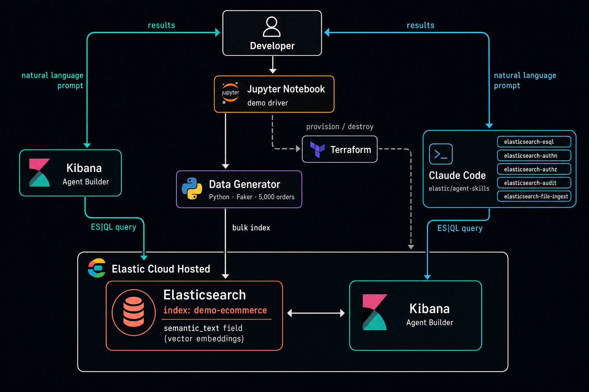
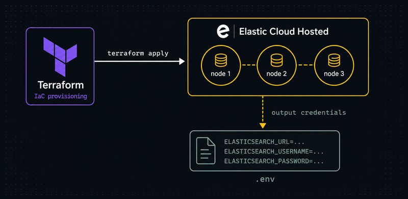
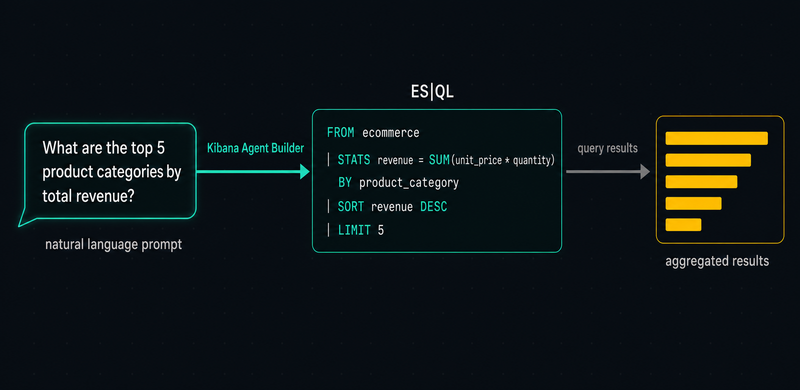
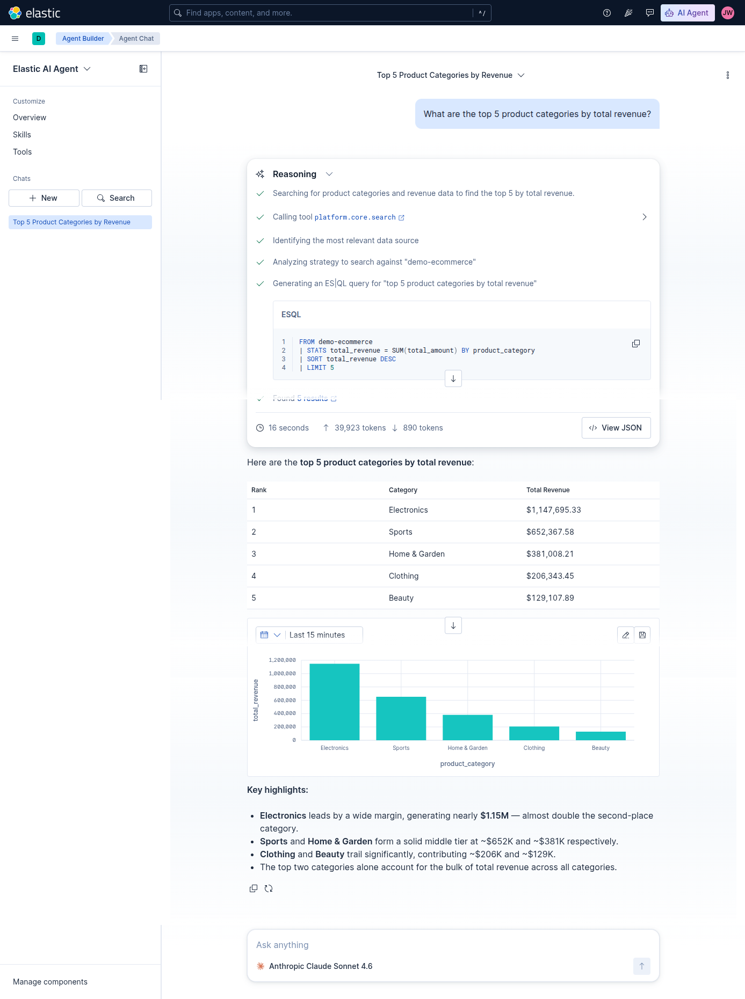
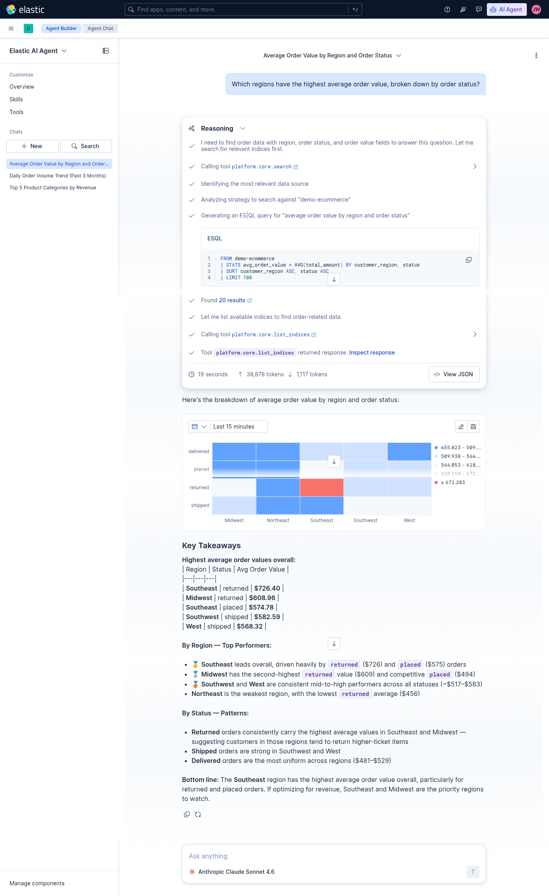
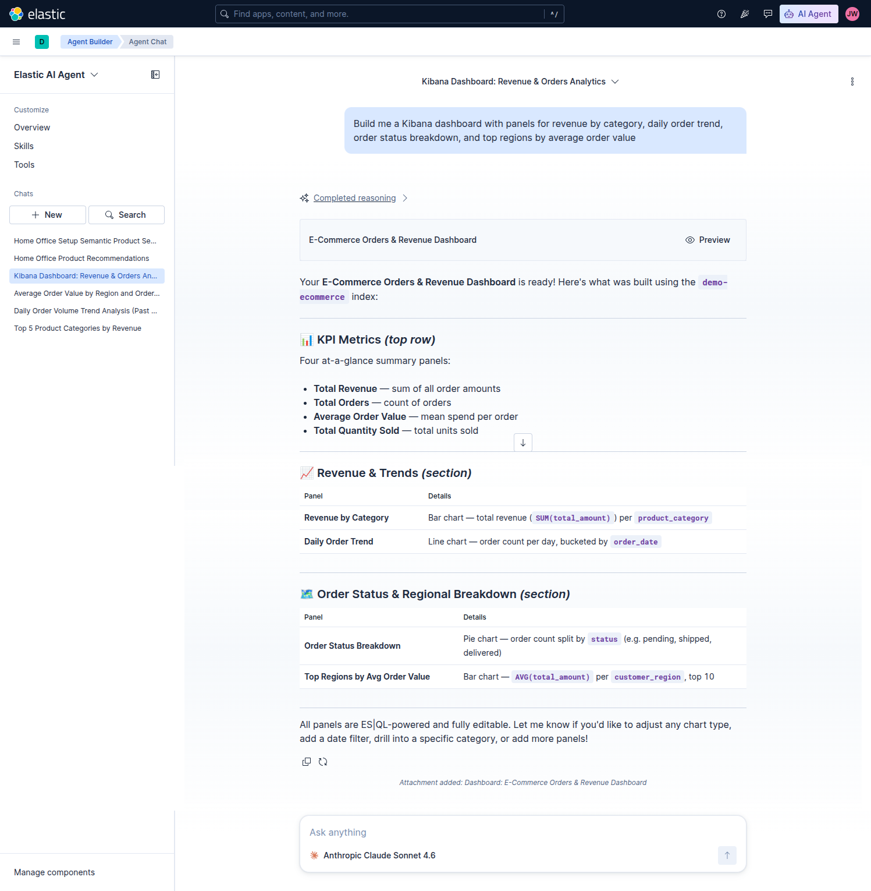
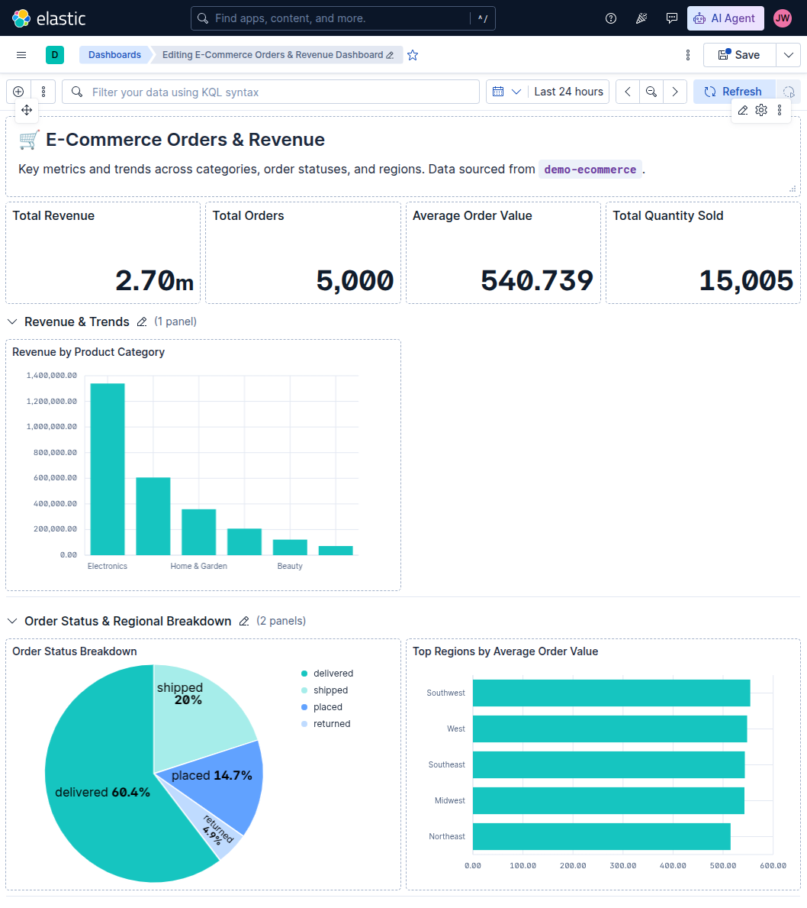
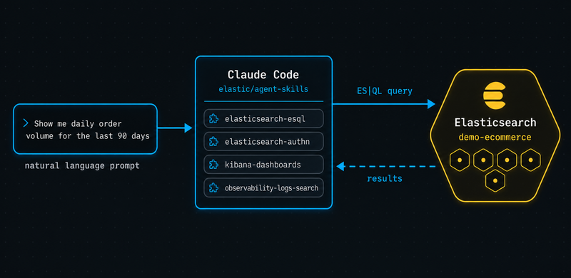

Two interfaces, one Elasticsearch index — the Kibana Agent Builder GUI and Claude Code with Elastic agent skills, both turning plain English into live ES|QL.
Analysts know the question they want answered, not the STATS … BY … | SORT pipeline that answers it.
Correct queries require knowing field names, types, and which fields support semantic vs. full-text search.
Developers want answers inside their existing workflow — the browser or the terminal — not a new tool.
Natural language is becoming a first-class interface to Elasticsearch. This session shows two production-ready paths to get there.
A no-code GUI agent. Type a question in the browser; get back ES|QL, results, and even full dashboards.
Official, open-source skills that inject ES|QL expertise into any compatible agent. We demo them in Claude Code.


A 3-node Elastic Cloud Hosted deployment, provisioned as code. Credentials are written to a local .env file and loaded by Python — no secrets committed to source control.
Orders, customers, regions, categories, prices, statuses — enough shape for aggregation, time-series, and ranking queries.
product_description is mapped as semantic_text, so descriptions carry vector embeddings — enabling meaning-based search out of the box.
"mappings": { "properties": { "order_id": { "type": "keyword" }, "customer_id": { "type": "keyword" }, "customer_name": { "type": "text" }, "customer_region": { "type": "keyword" }, "order_date": { "type": "date" }, "status": { "type": "keyword" }, "product_category": { "type": "keyword" }, "product_name": { "type": "text" }, "product_description": { "type": "semantic_text" }, // vector embeddings "unit_price": { "type": "float" }, "quantity": { "type": "integer" }, "total_amount": { "type": "float" }, "payment_method": { "type": "keyword" } }}

Open Agent Chat in Kibana, point it at the demo-ecommerce index, and ask in plain English. The agent reads the schema and grounds every query in real field names — no mapping knowledge required.

Standard aggregation — the agent produces a clean STATS · SORT · LIMIT pipeline.

Two-dimension grouping inferred directly from the question — region × status.


Beyond queries — a single request builds a multi-panel Lens dashboard, bypassing ES|QL entirely.

Official, open-source Elastic skills install with one command and equip Claude Code to write idiomatic ES|QL — right inside the terminal where developers already work.
$ npx skills add elastic/agent-skills --claude # installs self-contained SKILL.md packages
Each skill is a SKILL.md file. Its description is the trigger — the agent reads it to decide when to activate. The quality comes from Elastic-authored ES|QL patterns baked into the instructions, not an external service.
“Products for fitness & recovery, regardless of category” → vector search on semantic_text, spanning Sports, Electronics & Clothing.
“Descriptions mentioning ‘wireless’ or ‘bluetooth’” → keyword MATCH with boolean OR, then aggregated.
FROM demo-ecommerce | STATS total = COUNT(*), returned = COUNT(*) WHERE status == "returned" BY product_category | EVAL return_rate_pct = ROUND(100.0 * returned / total, 2) | SORT return_rate_pct DESC
Two-pass aggregation in a single pipeline — the same intent, expressed in plain English.
You want a quick, shareable answer or a dashboard without leaving the browser. Ideal for analysts and ad-hoc exploration.
You're working in a coding agent or terminal, need the query embedded in code, or want to chain results into a larger automated workflow.
Neither requires the user to know ES|QL syntax or the index mapping — the agent grounds itself in the live schema either way.